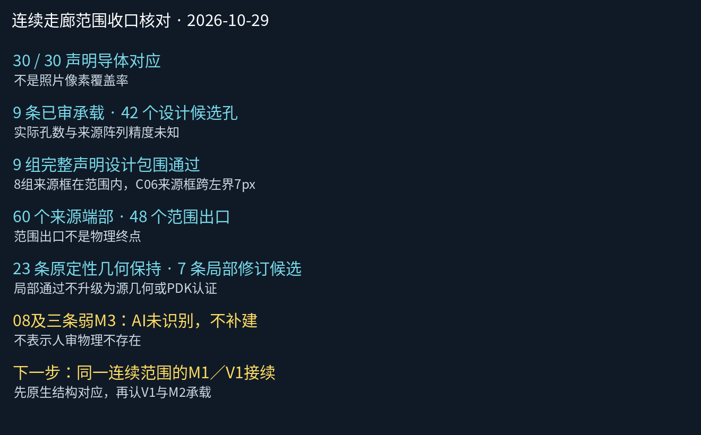

连续走廊：声明清单闭环，物理资格仍有边界
30/30声明导体都有几何对应，9个已审承载接口均已落实、完整候选孔组包围通过。8个来源孔组框完全在范围内；C06-V2框跨左边界7个原生像素，不能说9个均完整位于范围内。照片覆盖率、物理接口总数和全网完成仍未知。
48个端部是范围出口，不是物理终点。23条几何保持原定性已审形状，7条为后来局部修订候选；新坐标没有冒充重新人审批准。08和三条弱M3仍为AI未识别处置，不是人审物理不存在。

覆盖汇总 · 30导体 · 9接口 · 60端点 · 几何工作包
当前来源与独立规则几何
独立设计：不作为照片精确投影
9条已审接口
| ID | 来源承载 | 来源范围资格 | 设计孔数 | 设计包围 |
|---|
| RT-V2-U1 | RT-M2-R01 → RT-M3-UP | 在范围内 | 6（候选，真实数量未知） | 整个声明包络包围通过 |
| RT-V2-U2 | RT-M2-R02 → RT-M3-UP | 在范围内 | 6（候选，真实数量未知） | 整个声明包络包围通过 |
| RT-V2-D1 | RT-M2-R01 → RT-M3-DOWN | 在范围内 | 10（候选，真实数量未知） | 整个声明包络包围通过 |
| RT-V2-D2 | RT-M2-R02 → RT-M3-DOWN | 在范围内 | 10（候选，真实数量未知） | 整个声明包络包围通过 |
| N1-V2 | RT-M2-NARROW → C-M3-L01 | 在范围内 | 2（候选，真实数量未知） | 整个声明包络包围通过 |
| C03-V2 | C-M2-03 → C-M3-T01 | 在范围内 | 2（候选，真实数量未知） | 整个声明包络包围通过 |
| C04-V2 | C-M2-04 → C-M3-T02 | 在范围内 | 2（候选，真实数量未知） | 整个声明包络包围通过 |
| C05-V2 | C-M2-05 → C-M3-E1 | 在范围内 | 2（候选，真实数量未知） | 整个声明包络包围通过 |
| C06-V2 | C-M2-06 → C-M3-E2 | 跨左边界，需邻域上下文 | 2（候选，真实数量未知） | 整个声明包络包围通过 |
下一阶段评估
优先把M1／V1接入同一个连续范围，而非继续增加孤立M3小样。先用原生结构核清同位置，再从M1侧认V1，最后匹配本走廊已审M2；不能按相似坐标或原图图名拼接。既有短支路V1样本位于其他原生区域，只能作为方法参考。
下一阶段已开始独立原生检索，尚未建立同位置对应：M1检索宽图 · M2检索宽图。相同裁片数字坐标不代表已对齐；未增加V1候选或连接。
当前可以收口的是声明范围内的接续、来源/几何/批准一致性和显式设计包围。仍不可宣称完整五层、实际孔数、源像素边界精度、真实PDK或全网导出。本次未新增几何、接口、人审或公共展示更改。